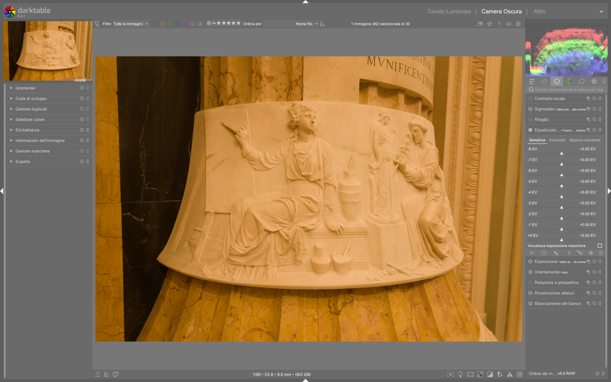

Tone Equalizer¶
Il Tone Equalizer opera nel dominio lineare utilizzando una maschera guidata che divide l'immagine in zone di luminanza. Il suo cuore è il filtro EIGF (Exposure-Independent Guided Filter) che sfuoca la maschera preservando i bordi, evitando aloni1.
Panoramica¶
Il Tone Equalizer è un modulo dodge and burn avanzato progettato per operare in spazio lineare RGB, sostituendo efficacemente combinazioni di moduli come shadows and highlights, tone curve, base curve e zone system (deprecato)2. Funziona in sinergia con filmic rgb: insieme costituiscono il nucleo della pipeline scene-referred, permettendo una compressione dinamica precisa senza appiattire il contrasto locale2. A differenza dei classici equalizzatori tonali, non modifica direttamente i pixel, ma agisce tramite una maschera intermedia — una versione sfocata e quantizzata dell’immagine stessa — che funge da “mappa di istruzioni” per dove applicare le correzioni di esposizione2.
Il flusso interno è: input → guided mask generation → mask post-processing → exposure lookup → output.
Il modulo è strutturato in tre schede complementari: - Simple: interfaccia a 9 slider (da –8 EV a 0 EV), ideale per regolazioni rapide e intuitive. - Advanced: curva tonale interattiva con 9 punti di controllo, sovrapposta all’istogramma della maschera, per precisione fine. - Masking: controlli dedicati alla creazione, affinamento e bilanciamento della maschera stessa2.
Flusso di lavoro¶
1. Preparazione della maschera (passo fondamentale)¶
Prima di qualsiasi regolazione tonale, è essenziale ottimizzare la maschera guidata. Una maschera mal configurata produce transizioni artificiali o effetti indesiderati (es. "halos" o "banding"). Il flusso consigliato è:
- Passa alla scheda «Masking»
- Imposta
luminance estimatorsu RGB euclidean norm (valore predefinito, più robusto per immagini con illuminazione mista)2 - Scegli
preserve details→ eigf (default, garantisce uniformità di sfocatura tra ombre e luci)2 - Regola
smoothing diameter: - Per EIGF: 1–10% della lunghezza del lato maggiore dell’immagine
- Valore tipico: 5% (equivalente a ~100 px su un’immagine 2000×3000)2
- Usa i pulsanti bacchetta magica accanto a
mask exposure compensationemask contrast compensationper centrare e dilatare automaticamente l’istogramma della maschera3 - Verifica la qualità della maschera cliccando su «display exposure mask»: la maschera deve mostrare transizioni morbide tra aree di diversa luminanza, senza granularità eccessiva né perdita di dettaglio nei bordi2
Perché centrare l’istogramma?
L’istogramma della maschera deve coprire il più possibile l’intero range di 9 EV (da –8 a +0 EV) per garantire che tutti i 9 punti di controllo della curva siano attivamente utilizzabili. Se l’istogramma è compresso in una sola zona (es. solo tra –4 e –2 EV), i punti esterni non avranno alcun effetto2.
2. Regolazione interattiva (core workflow)¶
La funzionalità più potente del Tone Equalizer:
- Attiva il modulo, vai nel tab «Avanzato»
- Porta il cursore sull'immagine, sopra un'area troppo scura
- Rotella verso l'alto per schiarire, verso il basso per scurire
- La curva si aggiorna automaticamente in tempo reale
- Ripeti su aree troppo luminose
Durante questa operazione, il cursore mostra informazioni critiche:
- Croce: posizione esatta del pixel
- Cerchio esterno: intensità della maschera in EV (es. –3.2 EV)
- Cerchio interno: intensità modificata dopo applicazione della curva (più chiaro = schiarito, più scuro = scurito)
- Arco sinistro: entità della modifica (lunghezza proporzionale a ±EV applicati)2
3. Affinamento manuale e combinazione con altri moduli¶
Dopo aver impostato le basi con l’interazione mouse:
- Passa alla scheda «Simple» per regolazioni globali rapide (es. sollevare tutti i mezzi toni di +0.3 EV)
- Usa «Advanced» per correggere transizioni: aumenta curve smoothing fino a 0.6 per evitare oscillazioni matematiche2
- Combina con filmic rgb: se filmic comprime le alte luci, usa tone equalizer per rilanciare specifiche zone (es. volti in controluce) senza riaprire il clipping5
4. Workflow da video tutorial: maschere parametriche e selezione cromatica¶
Da [ENG] darktable masks Episode 4 (video-tutorials)9
1. Attiva la scheda «Advanced», espandi la sezione «parametric mask»
2. Seleziona lo spazio colore JzCzhz, poi il canale Cz (cromaticità) per isolare aree colorate
3. Usa i due triangoli inferiori per definire la soglia minima di cromaticità (es. Cz = 0.25) e i due superiori per la massima (Cz = 0.75)
4. Attiva «toggle polarity» per invertire la maschera e selezionare l’esterno delle aree colorate
5. Regola feathering radius a 8.0 px per una transizione morbida tra area selezionata e non selezionata
6. Applica boost factor a +0.4 EV per aumentare la luminanza solo nelle zone con cromaticità compresa tra 0.25 e 0.759
5. Workflow da video tutorial: correzione di sovraesposizione HDR¶
Da [ENG] Darktable first steps EP04 (video-tutorials)10
1. Apri un’immagine con avviso arancione (toni >0 EV sulla maschera): significa che la maschera non copre tutto il range utile
2. Vai nella scheda «Masking», clicca la bacchetta magica su mask exposure compensation per centrare l’istogramma
3. Regola manualmente mask exposure compensation a –0.8 EV per spostare l’istogramma verso sinistra e includere i toni chiari
4. Aumenta mask contrast compensation a +0.35 per dilatare l’istogramma e migliorare la separazione tra cielo e nuvole
5. Nella scheda «Advanced», abbassa il punto a +0.0 EV di –0.6 EV per recuperare il cielo, e alza quello a –2.0 EV di +0.4 EV per rafforzare i dettagli della lavanda
6. Applica curve smoothing a 0.45 per evitare transizioni brusche10
Parametri¶
| Parametro | Descrizione | Range / Default | Note |
|---|---|---|---|
| Exposure boost | Compensazione globale di esposizione applicata prima della maschera | –4.00 a +4.00 EV / 0.00 EV | Utile per correzioni grossolane prima di entrare nel dettaglio tonale2 |
| Blacks / Shadows / Midtones / Highlights / Whites / Speculars | Regolazione per zona (corrisponde ai 6 punti centrali della curva Advanced) | –4.00 a +4.00 EV / 0.00 EV | Nella scheda Simple, questi sono i 6 slider centrali dei 9 totali (–8, –6, –4, –2, 0, +2 EV)2 |
| Mask exposure compensation | Sposta orizzontalmente l’istogramma della maschera | –4.00 a +4.00 EV / 0.00 EV | Fondamentale dopo aver usato exposure: ricentra la maschera se l’immagine è stata globalmente schiarita/scurita3 |
| Mask contrast compensation | Dilata o comprime l’istogramma della maschera | –1.00 a +1.00 / 0.00 | Valori >0.3 migliorano la separazione tra zone tonali simili (es. cielo e nuvole)2 |
| Curve smoothing | Interpolazione tra i punti di controllo della curva | 0.00 a 1.00 / 0.00 | Valori >0.6 possono causare instabilità matematica (oscillazioni); 0.3–0.5 è il range sicuro per transizioni naturali2 |
| Filter diffusion | Numero di iterazioni del filtro di sfocatura | 1–5 / 1 | Valore 2 = sfocatura 2× più intensa; valori >3 aumentano significativamente i tempi di elaborazione2 |
| Edges refinement/feathering | Precisione nel seguire i bordi ad alto contrasto | 0–10000 / 100 | Valori alti (>1000) migliorano la definizione di contorni netti (es. orizzonte), ma richiedono più RAM2 |
| Opacity | Intensità complessiva dell’effetto | 0–100% / 100% | Ridurre l’opacità è preferibile a modificare drasticamente la curva, per mantenere la forma della curva integra5 |
Consigli operativi¶
Opacità vs curva
Se l'effetto è troppo intenso, ridurre l'opacità invece di modificare drasticamente la curva (che tende ad appiattire il risultato). L’opacità controlla l’intensità complessiva dell’intero effetto, mantenendo la forma della curva integra5.
Direzione della curva
Pendenza verso il basso = piu' contrasto. Pendenza verso l'alto = meno contrasto. Una curva perfettamente orizzontale (tutti i punti a 0.00 EV) annulla ogni effetto5.
Monitorare il bilancio globale
Quando combini Tone Equalizer e modulo Exposure, monitora costantemente il bilancio globale per evitare esposizioni indesiderate. Un aumento di +1.0 EV in exposure seguito da –0.8 EV su midtones in tone equalizer non equivale a +0.2 EV globale: la maschera può alterare il bilancio cromatico e la distribuzione tonale in modo non lineare5.
Non toccare i singoli slider
Usa sempre l'interazione diretta sull'immagine. È più veloce e produce risultati migliori. I slider manuali sono utili solo per finissimi aggiustamenti post-interazione1.
Evitare modifiche accidentali
Clicca sull'intestazione del modulo prima di zoomare per evitare la modifica accidentale dell'esposizione. Tenere premuto il tasto ‘a’ mentre si usa la rotellina del mouse disabilita temporaneamente il controllo tonale e abilita lo zoom/pan4.
Novità darktable 5.4
La compensazione maschera è ora direttamente accessibile dalla schermata principale (non più nascosta nel tab). Clic destro sui cursori tonali per la nuova ruota tinta visuale (hue wheel), utile per bilanciare le tonalità durante le regolazioni locali3.
Esempi pratici¶
✅ Correzione di un ritratto in controluce¶
- Problema: soggetto scuro, sfondo sovraesposto
- Soluzione:
- Attivare
display exposure maskper verificare che la maschera distingua bene il volto (–2.5 EV) dal cielo (+0.5 EV) - Con il mouse sul volto: rotellina su per +0.7 EV
- Con il mouse sul cielo: rotellina giù per –0.4 EV
- Ridurre
opacitya 85% per evitare un effetto "incollato" - Usare
mask contrast compensationa +0.25 per accentuare la separazione volto/cielo5
✅ Paesaggio con finestra soleggiata (HDR)¶
- Problema: interni bui, finestra bianca
- Soluzione:
- Nella scheda Masking, impostare
smoothing diametera 8%,edges refinementa 500,filter diffusiona 2 - Usare la bacchetta magica su
mask exposure compensationper centrare l’istogramma - Nella scheda Advanced, abbassare il punto a –6.0 EV (interni) di –1.2 EV e alzare il punto a +0.0 EV (finestra) di +0.3 EV
- Applicare
curve smoothinga 0.45 per transizioni fluide2
✅ Selezione di fiori viola con maschera parametrica¶
Da [ENG] darktable masks Episode 4 (video-tutorials)9
- Problema: isolare i fiori viola da uno sfondo verde omogeneo
- Soluzione:
1. Nella scheda Advanced, espandere «parametric mask», selezionare spazio colore JzCzhz, canale hZ (tonalità)
2. Impostare il triangolo inferiore sinistro su hZ = 263 (viola) e quello superiore destro su hZ = 275, con ampiezza di 12 unità
3. Regolare mask contrast a +0.45 per aumentare la distinzione tra viola e verde
4. Attivare input after blur per applicare la maschera dopo la sfocatura della maschera, migliorando la coerenza tonale
5. Applicare boost factor a +0.6 EV per schiarire solo i fiori viola, lasciando inalterato lo sfondo9
Domande frequenti¶
Problema: Maschera con artefatti "a grana" o "a blocchi"¶
Questo indica una mask quantization troppo alta o una smoothing diameter insufficiente. Riduci mask quantization a 0.0 e aumenta smoothing diameter a 6–8%, quindi verifica con display exposure mask. Se persiste, passa da eigf a averaged eigf per mitigare la sfocatura eccessiva2.
Problema: Effetto "halo" attorno ai bordi dopo regolazione¶
È causato da una curve smoothing >0.6 o da una smoothing diameter troppo grande rispetto alla scala dei dettagli. Riduci curve smoothing a 0.35, imposta smoothing diameter a 3–4%, e usa edges refinement/feathering a 1500–2000 per forzare il filtro a seguire meglio i contorni2.
Problema: Nessun effetto visibile anche dopo regolazione della curva¶
Verifica che l’istogramma della maschera copra effettivamente il range EV del punto modificato: se il punto a –4.0 EV è attivo ma l’istogramma della maschera ha picco solo tra –1.0 e +0.5 EV, quel punto non influenzerà nulla. Usa la bacchetta magica su mask exposure compensation e mask contrast compensation per espanderlo3.
Preset integrati¶
darktable 5.4 include preset preconfigurati per casi comuni, accessibili dal menu hamburger (☰) del modulo2:
| Preset | Quando usarlo | Note |
|---|---|---|
compress shadows & highlights (eigf) |
Immagini con ampio DR e necessità di compressione senza perdita di contrasto locale | Usa EIGF per uniformità tra ombre e luci; valore predefinito smoothing diameter = 5%2 |
compress shadows & highlights (gf) |
Immagini con ombre molto dettagliate e luci semplici (es. ritratti in studio) | Usa guided filter originale: migliore preservazione dettagli ombre, ma sfocatura maggiore nelle luci2 |
lift shadows (eigf) |
Ombre piatte e poco definite, senza clipping | Applica +0.9 EV a –8.0 EV, +0.5 EV a –6.0 EV, con curve smoothing = 0.42 |
recover highlights (eigf) |
Luci sovraesposte ma recuperabili (es. cielo con dettagli nuvolosi) | Applica –0.7 EV a +0.0 EV, –0.3 EV a +2.0 EV, con mask contrast compensation = +0.32 |
Riferimenti visuali¶

{kind=link}
Risorse¶
Il Tone Equalizer -- Understanding the Masking Tab è un articolo tecnico dettagliato disponibile su darktable.info e discusso ampiamente nel forum pixls.us6.
La community darktable.fr offre tutorial in francese sul Tone Equalizer con esempi before/after7.
Il video Full b&w edits in darktable for street photography dimostra l’uso avanzato del modulo per il controllo locale del contrasto in immagini monocromatiche8.
Fonti¶
-
darktable User Manual -- Tone Equalizer, docs.darktable.org |
processed/darktable-usermanual-en/usermanual-48-en-module-reference-processing-modules-tone-equalizer.md↩↩ -
darktable user manual - tone equalizer, docs.darktable.org |
processed/darktable-usermanual-en/usermanual-48-en-module-reference-processing-modules-tone-equalizer.md↩↩↩↩↩↩↩↩↩↩↩↩↩↩↩↩↩↩↩↩↩↩↩↩↩ -
darktable 5.4 UPDATE -- A Dabble in Photography ↩↩↩↩
-
Lowlight photos -- A Dabble in Photography ↩
-
discuss.pixls.us -- Tone Equalizer discussions | Copie locali in
processed/discuss-pixls/↩ -
darktable.fr -- Tutorials Tone Equalizer | Copie locali in
processed/darktable-fr/↩ -
Full b&w edits in darktable for street photography -- A Dabble in Photography ↩
-
[ENG] darktable masks Episode 4, YouTube |
processed/video-tutorials/4z70D5zRAXw.md↩↩↩↩ -
[ENG] Darktable first steps EP04, YouTube |
processed/video-tutorials/KABRMukapek.md↩↩